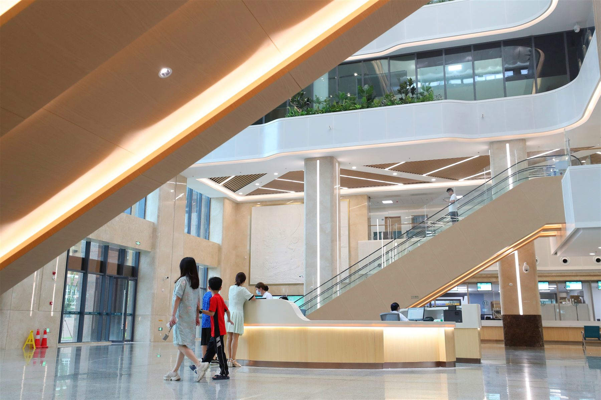

Cancer care
Complex diagnosis, surgery, radiotherapy and multidisciplinary review
Compare suitable hospitals, understand the care path and prepare a realistic budget—with one bilingual team connecting the steps.
Choose your next step
Begin with the patient task that matters now. Each option opens a focused tool instead of another long explanation.
Shortlist hospitals by condition, clinical capability, city and international-patient support.
Start matching→ 02 · CARE PATHSee what to prepare before review, travel, treatment and follow-up.
Build a pathway→ 03 · FULL BUDGETCombine medical, accommodation, interpretation and contingency ranges.
Open estimator↓ 04 · TCM ORIENTATIONPrepare useful questions and recognise when hospital assessment comes first.
Open the guide→Priority specialties
The categories below reflect the high-complexity needs identified in the supplied business research. Final suitability is determined by the receiving hospital.
Complex diagnosis, surgery, radiotherapy and multidisciplinary review
Complex coronary, valve, congenital and interventional care
Brain, spine, vascular and functional neurosurgical review
Leukaemia, lymphoma and transplant-related assessment
Joint, spine, complex revision and rehabilitation planning
Complex cornea, retina, orbit and ocular tumour care
Fertility, genetics and high-risk maternal assessment
Congenital, surgical, cancer and rare-disease coordination
This website supports planned care coordination and does not provide diagnosis or emergency treatment.

How matching should work
The recommendation should explain why a hospital fits your condition, what information is still needed, and whether the appropriate team is available.
Official hospital scenes
These are public materials from hospital websites. They help explain possible care settings and do not imply a CareChina partnership.
Prototype-use imagery. Publication or commercial reuse requires confirmation from each rights holder.
Priority medical networks
Wuhan, Chengdu and Guangzhou each offer different clinical strengths and international-patient support. Availability is confirmed case by case.
CENTRAL CHINA
A major medical centre in central China with strong comprehensive hospitals, cardiac care, transplantation and complex multidisciplinary services.
Research list, not a representation of contracted partnerships. Hospital names and specialty descriptions must be reconfirmed with official sources before publication.
A controlled care journey
The coordinator keeps medical decisions with the hospital and turns the surrounding logistics into a clear sequence.
Condition, history, country and preferred contact
Reports, images, pathology and medication list
Clinical fit, plan direction, estimate and timing
Admission, travel, language and stay coordination
On-site support and records for care back home
Support around the medicine
International patients often need six practical services to connect around the clinical plan.
Consultation, testing, admission, discharge and translated records.
A current checklist and coordination of documents issued by the hospital.
Plan transfers and stays around treatment, mobility and family needs.
Clarify deposits, invoice timing and institution-sponsored payment steps.
Confirm diet, prayer, companion and privacy needs before arrival.
Organise discharge records and the next appropriate follow-up step.
Step 3 · Plan a realistic range
Adjust the scenario and travel assumptions. The result is a planning range, while the receiving hospital provides the formal medical estimate after review.
Prototype assumptions only. Excludes international flights and unexpected clinical changes. Currency and service policies require live validation before launch.
Before you decide
Clear answers reduce risk. Final requirements still depend on the hospital, your nationality and current regulations.
No. Begin with your condition, medical history and priorities. Matching should consider specialty fit, hospital availability, city, budget and practical support.
Recent clinical summaries, imaging and image files, pathology, laboratory results, procedure reports and a current medication list. The receiving hospital may request additional tests.
No. Online review can clarify possible directions, but diagnosis, suitability, treatment and outcomes cannot be guaranteed before the clinical team completes the required assessment.
Requirements change by nationality, purpose and policy. The coordinator can provide a current checklist and help obtain hospital documents, but the relevant authority makes the final decision.
Often yes, subject to entry, hospital and payment rules. Companion accommodation, interpretation and cultural needs should be confirmed before travel.
Only the minimum necessary information should be collected and shared with the relevant care-review team after you understand the purpose and consent. A production service needs a formal privacy and retention policy.
First step · no document upload yet
This lightweight first step helps route the enquiry. Medical files should be collected only in a secure, consent-based follow-up workflow.
Institutional referrals need a separate workflow for authorisation, payment guarantees, records and case status.